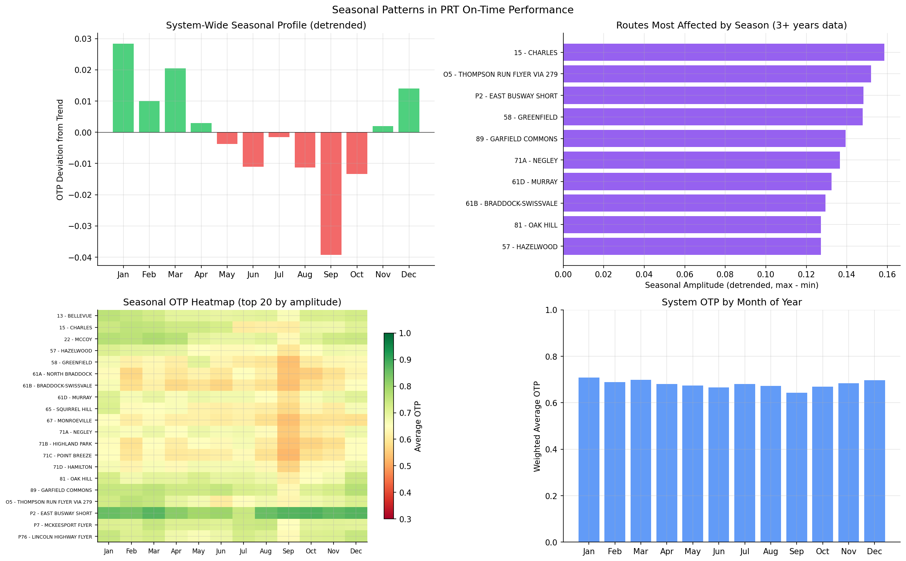

Analysis
06: Seasonal Patterns
Core OTP Patterns
Coverage: 2019-01 to 2025-11 (from otp_monthly).
Built 2026-03-27 19:46 UTC · Commit 4cbb45b
Page Navigation
Analysis Navigation
Data Provenance
flowchart LR
06_seasonal_patterns(["06: Seasonal Patterns"])
t_otp_monthly[("otp_monthly")] --> 06_seasonal_patterns
01_data_ingestion[["Data Ingestion"]] --> t_otp_monthly
u1_01_data_ingestion[/"data/routes_by_month.csv"/] --> 01_data_ingestion
u2_01_data_ingestion[/"data/PRT_Current_Routes_Full_System_de0e48fcbed24ebc8b0d933e47b56682.csv"/] --> 01_data_ingestion
u3_01_data_ingestion[/"data/Transit_stops_(current)_by_route_e040ee029227468ebf9d217402a82fa9.csv"/] --> 01_data_ingestion
u4_01_data_ingestion[/"data/PRT_Stop_Reference_Lookup_Table.csv"/] --> 01_data_ingestion
u5_01_data_ingestion[/"data/average-ridership/12bb84ed-397e-435c-8d1b-8ce543108698.csv"/] --> 01_data_ingestion
t_route_stops[("route_stops")] --> 06_seasonal_patterns
01_data_ingestion[["Data Ingestion"]] --> t_route_stops
t_routes[("routes")] --> 06_seasonal_patterns
01_data_ingestion[["Data Ingestion"]] --> t_routes
d1_06_seasonal_patterns(("numpy (lib)")) --> 06_seasonal_patterns
d2_06_seasonal_patterns(("polars (lib)")) --> 06_seasonal_patterns
classDef page fill:#dbeafe,stroke:#1d4ed8,color:#1e3a8a,stroke-width:2px;
classDef table fill:#ecfeff,stroke:#0e7490,color:#164e63;
classDef dep fill:#fff7ed,stroke:#c2410c,color:#7c2d12,stroke-dasharray: 4 2;
classDef file fill:#eef2ff,stroke:#6366f1,color:#3730a3;
classDef api fill:#f0fdf4,stroke:#16a34a,color:#14532d;
classDef pipeline fill:#f5f3ff,stroke:#7c3aed,color:#4c1d95;
class 06_seasonal_patterns page;
class t_otp_monthly,t_route_stops,t_routes table;
class d1_06_seasonal_patterns,d2_06_seasonal_patterns dep;
class u1_01_data_ingestion,u2_01_data_ingestion,u3_01_data_ingestion,u4_01_data_ingestion,u5_01_data_ingestion file;
class 01_data_ingestion pipeline;
Findings
Findings: Seasonal Patterns
Summary
PRT shows a consistent seasonal cycle with winter months outperforming summer/fall. The system-wide seasonal swing is about 6.8 percentage points after detrending. 93 routes had sufficient data (3+ years) for route-level seasonal analysis.
System-Wide Seasonal Profile
Computed from a balanced panel of 93 routes (present in all 12 months-of-year) over complete calendar years (2019--2024).
| Month | Weighted OTP | Deviation from Trend |
|---|---|---|
| January | 70.8% | +2.8 pp (Best) |
| February | 68.9% | +1.0 pp |
| March | 69.9% | +2.1 pp |
| April | 68.1% | +0.3 pp |
| May | 67.4% | -0.4 pp |
| June | 66.7% | -1.1 pp |
| July | 68.1% | -0.2 pp |
| August | 67.2% | -1.1 pp |
| September | 64.4% | -3.9 pp (Worst) |
| October | 66.9% | -1.3 pp |
| November | 68.4% | +0.2 pp |
| December | 69.6% | +1.4 pp |
Methodology Note
Seasonal profiles are computed by first removing a 12-month centered rolling mean (trend), then averaging the detrended residuals by month-of-year. This ensures that long-term trends (e.g., the COVID dip) do not distort the seasonal pattern. Route-level analysis requires at least 3 years of data to ensure each month-of-year is represented multiple times.
Red-team corrections applied (2026-02-10):
- Restricted to complete calendar years (2019-01 through 2024-12) to ensure every month-of-year has equal year coverage. Previously, December was missing 2025 data (the worst-performing year), inflating its seasonal average.
- Used a balanced panel of routes present in all 12 months-of-year for the system-wide profile. This excluded 5 routes: 3 winter-only routes with very high OTP (37 Castle Shannon 81%, 42 Potomac 83%, RLSH Red Line Shuttle 98%) and 2 with other gaps (53 Homestead Park, SWL). Their inclusion previously inflated winter averages.
- Note:
trips_7dweighting is a static snapshot and may not reflect historical service levels. The seasonal pattern holds in both weighted and unweighted averages, so the core finding is robust to weighting choice.
Most Seasonally Affected Routes (detrended)
| Route | Seasonal Amplitude |
|---|---|
| 15 - Charles | 15.8% |
| O5 - Thompson Run Flyer via 279 | 15.2% |
| P2 - East Busway Short | 14.8% |
Observations
- The winter advantage is somewhat counterintuitive -- one might expect snow and ice to worsen OTP. Possible explanations: lower ridership reduces dwell time; fewer construction detours; school breaks reduce congestion.
- September is consistently the worst month (-3.9 pp from trend), possibly due to the return of school-year traffic and late-summer construction.
- After applying the balanced panel filter and complete-years restriction, the seasonal pattern persists with minimal change in magnitude, confirming it is a genuine operational pattern rather than a data artifact.
- Most routes have a seasonal amplitude under 15%. The heatmap of the top 20 routes shows no single month dominates as "worst" across all routes -- the pattern varies, though fall months are generally weaker.
Caveats
- Seasonal decomposition uses a centered moving-average method to remove trend, not a formal STL decomposition. Results are directionally correct but assume additive seasonality.
- Only 6 years of complete data (2019--2024) means each month-of-year average is based on ~6 detrended observations, limiting statistical power.
- The
trips_7dweighting reflects a single point-in-time snapshot of service frequency, not historical values. Route frequencies likely changed over the study period (especially during COVID).
Review History
- 2026-02-10: RED-TEAM-REPORTS/2026-02-10-analysis-06-seasonal-patterns.md — 4 issues (2 moderate). Balanced panel and complete-years restrictions applied; core finding confirmed.
Output

seasonal decomposition charts.
No interactive outputs declared.
month-of-year seasonal profile per route.
Preview CSV
Methods
Methods: Seasonal Patterns
Question
Do PRT routes exhibit consistent seasonal OTP patterns? Are summer or winter months systematically better or worse?
Approach
- Restrict to complete calendar years (2019--2024) to ensure every month-of-year has equal year coverage.
- Use a balanced panel of routes present in all 12 months-of-year for the system-wide profile, preventing compositional bias from seasonal or short-lived routes.
- Compute a system-wide seasonal profile by averaging across balanced-panel routes (trip-weighted).
- Measure seasonal amplitude: max(month-of-year avg) - min(month-of-year avg) per route.
- Decompose into trend + seasonal + residual using a moving-average approach:
- Trend = 12-month centered rolling mean
- Seasonal = month-of-year mean of (OTP - trend)
- Residual = OTP - trend - seasonal
- Rank routes by seasonal amplitude to identify those most affected by seasons.
- Route-level analysis requires at least 3 years of data (36 months) for reliable seasonal estimates.
Data
| Name | Description | Source |
|---|---|---|
otp_monthly |
Monthly OTP per route | prt.db table |
route_stops |
Trip counts for weighting | prt.db table |
routes |
Route metadata | prt.db table |
Output
output/seasonal_patterns.csv-- month-of-year seasonal profile per routeoutput/seasonal_patterns.png-- seasonal decomposition charts
Source Code
|
Sources
| Name | Type | Why It Matters | Owner | Freshness | Caveat |
|---|---|---|---|---|---|
| otp_monthly | table | Primary analytical table used in this page's computations. | Produced by Data Ingestion. | Updated when the producing pipeline step is rerun. | Coverage depends on upstream source availability and ETL assumptions. |
Upstream sources (5)
|
|||||
| route_stops | table | Primary analytical table used in this page's computations. | Produced by Data Ingestion. | Updated when the producing pipeline step is rerun. | Coverage depends on upstream source availability and ETL assumptions. |
Upstream sources (5)
|
|||||
| routes | table | Primary analytical table used in this page's computations. | Produced by Data Ingestion. | Updated when the producing pipeline step is rerun. | Coverage depends on upstream source availability and ETL assumptions. |
Upstream sources (5)
|
|||||
| numpy | dependency | Runtime dependency required for this page's pipeline or analysis code. | Open-source Python ecosystem maintainers. | Version pinned by project environment until dependency updates are applied. | Library updates may change behavior or defaults. |
| polars | dependency | Runtime dependency required for this page's pipeline or analysis code. | Open-source Python ecosystem maintainers. | Version pinned by project environment until dependency updates are applied. | Library updates may change behavior or defaults. |